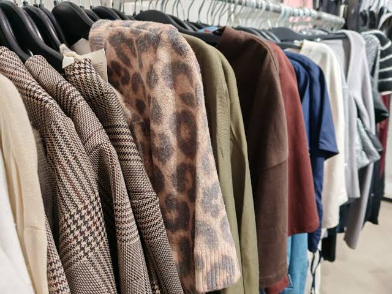

Fast fashion is clothing that is produced quickly and cheaply to follow the latest trends. This can cause large amounts of waste and harm the environment.

Credit to ABO FinlandMaking sustainable clothing choices can help reduce waste. Buying clothes that last longer, repairing damaged clothing and shopping at thrift stores are simple ways to become more sustainable.
We'd love to hear from you! If you have any questions or feedback, feel free to reach out to us at the contact page where we can take this one step further together.